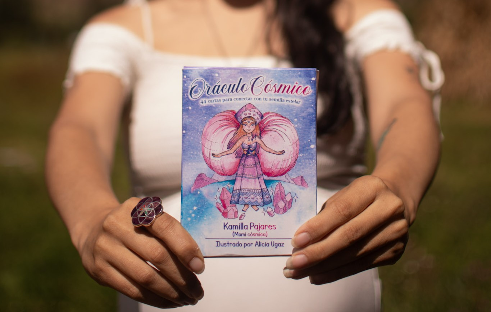

Contacto & FAQ
¿Cómo Agendar?
✦
El tiempo de espera para agendar tu sesión es aproximadamente entre 2 a 4 semanas según disponibilidad.
En el caso de que sea una sesión o terapia de "urgencia", puedes elegir la opción "Botiquín Cósmico".
Para confirmar la cita se deberá abonar el monto total de preferencia o el 50% y el restante hasta 24 horas antes de la fecha pactada.
Política de Zoom
✦
A partir de la fecha de la sesión, se darán 7 días para poder descargar el video del zoom. Luego de esa fecha, el video es borrado de la nube de zoom y ya no se puede recuperar.
Es responsabilidad de la mami el descargar con tiempo el video. Si se desea el servicio adicional de almacenamiento en la nube por 1 año se puede agregar el adicional de pago.
Agenda tu Cita en Instagram